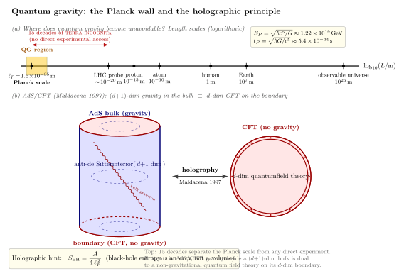

量子引力 — 为什么至今没解决?
把电视机里的雪花调出来看, 你随机捕捉到几个 CMB 光子; 把 LHC 的束流调到 14 TeV, 你撞出了 Higgs 玻色子. 但若我问 — 一个普朗克能量 $E_P\approx 1.22\times 10^{19}$ GeV 的电子撞上另一个普朗克能量的电子会发生什么? 这个问题在所有现有粒子加速器上都没有可观测意义: 为了把一个粒子加速到 $E_P$, 需要约 $10^{15}$ 倍 LHC 的能量, 或者一个直径接近银河系的环形加速器. 自然界给我们的实验证据停在了 $\sim 10^{-20}$ m, 而 GR 与 QM 必须合体的位置在 $\ell_P\sim 10^{-35}$ m. 中间的 15 个数量级, 是当代物理最深的一片实验真空区.
这是一个特殊的尴尬: 我们既不能造一台机器去看 Planck 尺度发生什么, 也无法仅靠两条已知理论 (GR + QM) 自一致地外推到那里 — 真要外推, 数学先在两环把你卡住. 这一节我们分四步把这件事讲清楚, 然后看看在没有 Planck 能量加速器的约束下, 物理学家是怎么把"量子引力"的轮廓一点点摸出来的.
一、Planck 尺度: 由 $\hbar$, $c$, $G$ 唯一定下的长度
把宇宙的三个最基本常数放在一起: 量子的 $\hbar$, 相对论的 $c$, 引力的 $G$. 你会发现它们有一个绝无歧义的"长度"组合. 量纲分析: $[\hbar]={\rm J\cdot s}$, $[c]={\rm m/s}$, $[G]={\rm m^3/(kg\cdot s^2)}$. 唯一能从 $\hbar^a c^b G^d$ 凑出长度量纲 ${\rm m}$ 的指数是 $a=1/2$, $b=-3/2$, $d=1/2$. 于是
$$ \ell_P \;=\; \sqrt{\frac{\hbar G}{c^3}} \;\approx\; 1.616\times 10^{-35}~\text{m}, \qquad t_P \;=\; \sqrt{\frac{\hbar G}{c^5}} \;\approx\; 5.39\times 10^{-44}~\text{s}, \qquad E_P \;=\; \sqrt{\frac{\hbar c^5}{G}} \;\approx\; 1.22\times 10^{19}~\text{GeV}. \tag{1} $$
这就是 Planck 1899 年想出来的"自然单位"系统 — 那时连 GR 还没诞生, 但他已经看出 $\hbar c/G$ 凑得出一个长度, 并且预言这是"独立于任何特殊文明的、绝对的长度单位"; 一旦遇到外星人, 你不必告诉他什么是米或秒, 直接说"我们的电子静质量是 $m_e\approx 4\times 10^{-23} m_P$"就可以了.
Planck 尺度的物理意义不是"最小的长度", 而是"经典几何概念失效的尺度": 一个被局域在 $\Delta x\sim \ell_P$ 范围内的探针, 由不确定性原理, 动量不确定 $\Delta p\sim \hbar/\ell_P$, 即能量 $\sim E_P$; 这个能量装在 $\ell_P$ 体积里, Schwarzschild 半径 $r_s=2GE/c^4\sim \ell_P$. 探针自己变成了一个黑洞, "测得更准"反而把信息藏进了视界. 所以 $\ell_P$ 既是 QM (位置不确定) 又是 GR (黑洞形成) 共同设的一道墙, 低于这个尺度, 连"长度"概念本身都成问题.
把 $\ell_P$ 放进现实尺度阶梯: 原子 $10^{-10}$ m 比它大 25 个数量级, 质子 $10^{-15}$ m 比它大 20 个, LHC 能探到 $\sim 10^{-20}$ m 也还差 15 个数量级 — 这就是图 1 上半板要传达的视觉直觉.
二、为什么直接量子化 GR 行不通
最朴素的尝试是把 GR 当 QED 处理. 写下度规 $g_{\mu\nu}=\eta_{\mu\nu}+\sqrt{32\pi G}\,h_{\mu\nu}/c^2$, 把 Einstein-Hilbert 作用量在 $h_{\mu\nu}$ 中展开成"自由场 + 自相互作用". 自由场是无质量自旋 2 的 graviton (1962 Feynman 在 Caltech 的演讲笔记里第一次清楚地把它做完), 振幅在树图层级和经典 GR 一致, 这是好消息.
坏消息从一环开始. 1974 年 't Hooft 与 Veltman (后者因此与同事得 Nobel) 算出: 引力子-引力子散射在一环上, 仅当世界里只有引力时, 发散可以全部吸进重新定义的牛顿常数, 其它的反常数因为 Riemann 张量的 Bianchi 恒等式刚好抵消. 但是 1986 年 Goroff 与 Sagnotti 把计算推到两环, 出现了一项形如 $\frac{209}{2880}\frac{1}{(4\pi)^4 \varepsilon}\int\sqrt{-g}\,R^{\alpha\beta}{}_{\gamma\delta}R^{\gamma\delta}{}_{\rho\sigma}R^{\rho\sigma}{}_{\alpha\beta}\,d^4x$ 的发散, 它不等价于已有的 $R$ 或 $R^2$ 项. 这意味着每升一阶都会蹦出新的、独立的反项, 需要无穷多个新的耦合常数才能定义这个理论 — 教科书定义中的"不可重整化". 量子 GR 作为一个 UV 完整 (高能完整) 的量子场论失败.
失败本身有一个干净的物理解释: $G$ 的量纲是 $[E]^{-2}$ (在 $\hbar=c=1$ 单位下). 任何耦合常数带负的能量量纲, 在高能极限都越积越大. 这跟 Fermi 当年写的弱相互作用四费米子耦合 $G_F\sim [E]^{-2}$ 是一样的毛病; 弱相互作用的解决办法是把它换成 $W,Z$ 玻色子的可重整理论. 引力呢? 没有那么便宜的替代.
过去 50 年, 物理学家给出了四条主要思路:
(i) String theory (1968 Veneziano 偶然发现的散射振幅 → 1970s Schwarz-Scherk 意识到有无质量自旋 2 模即引力子): 把所有粒子换成扩展的一维弦, 高能散射变软, UV 发散自动消失. 代价是需要 10 维时空 (超弦)、$E_8\times E_8$ 或 ${\rm SO}(32)$ 规范群、紧致化 6 维到 Calabi-Yau, 引出 $\sim 10^{500}$ 的 landscape. 弦论目前是数学上最完备的候选.
(ii) Loop quantum gravity (1986 Ashtekar 重写 GR 为相空间变量 → Rovelli-Smolin 量子化): 直接量子化时空几何本身, 面积与体积成为离散谱算符, 时空"颗粒化". 优点: 4 维, 不需要超对称, 背景独立; 缺点: 半经典极限 (即如何从 spin network 长出光滑的爱因斯坦时空) 至今没有完全干净的证明.
(iii) Asymptotic safety (Weinberg 1979): 也许 GR 是可重整化的, 只是它的紫外不动点 (UV fixed point) 不是高斯 (即 $G\to 0$) 而是非平凡的. 数值证据 (Reuter 流方程) 强烈倾向真的存在这样一个不动点, 但严格证明还差.
(iv) Causal set ('t Hooft, Sorkin 1980s): 时空的连续性是涌现的, 底层是一个偏序的离散事件集合. 优点: 自动保 Lorentz 不变 (在某种统计意义下); 缺点: 至今没有干净地推出 Einstein 方程.
这四条路子各自押在不同的本体论假设上, 但在一件事上意外地汇合 — 他们都被全息原理"吸引".
三、Bekenstein-Hawking 与全息原理
第 19、20 节我们推过 Hawking 温度 $T_H=\hbar c^3/(8\pi GMk_B)$, 并由 $dM=T_H\,dS$ 得到
$$ S_{\rm BH} \;=\; \frac{k_B\,A}{4\,\ell_P^{\,2}}, \qquad A=4\pi r_s^2. \tag{2} $$
这个公式表面上是黑洞的熵, 但它的形式异乎寻常: 通常一个体系的熵正比于体积 ($S\propto V$ 对应自由度密度有限), 而黑洞的熵正比于面积. 1993 年 't Hooft、1995 年 Susskind 把这件事推广为一条原理:
"任何引力理论里, 一个空间区域所能容纳的量子自由度上限, 由其边界面积决定, 而不是体积. 因此一个 $D$ 维引力系统的全部信息, 可以编码在它 $(D{-}1)$ 维的边界上 — 像一张全息底片."
这把黑洞 — 那个看起来最不可计算的东西 — 变成了量子引力的罗塞塔石碑: $S_{\rm BH}=A/(4\ell_P^2)$ 不是某个特殊体系的特殊性质, 而是任何量子引力理论必须给出的普适极限. 任何候选理论, 第一道考题就是"你能不能 microscopically 数出 $A/(4\ell_P^2)$ 个状态"; string theory 在 1996 年由 Strominger 与 Vafa 第一次给出了 BPS 黑洞的精确状态数, 与 $A/(4\ell_P^2)$ 完全吻合; LQG 的 Ashtekar-Krasnov 程序在 spin network 上数面积本征态, 也得到正比于 $A$ 的结果 (但比例系数需要一个 Immirzi 参数手调).
1997 年, 27 岁的 Maldacena 在 Princeton 写下了让全息原理变成可计算的对偶的具体例子: AdS/CFT 对应. 它的形式是:
$d{+}1$ 维 anti-de Sitter (AdS) 时空里的 IIB 型超弦理论 $\;\equiv\;$ $d$ 维边界上的 $\mathcal{N}=4$ 超对称 Yang-Mills (一个共形场论 CFT, 不含引力).
左边是引力, 右边没有引力 — 但两边的所有可观测量一一对应. 在 AdS 半径远大于 $\ell_P$ (即弱引力极限) 时, 右边的 CFT 处于强耦合, 反之亦然 — 这是一个强弱对偶: 一边算不动的, 在另一边变成微扰可控的. 它不是"两套理论恰好等价", 而是"它们本来就是同一个理论的两种语言".
AdS/CFT 是图 1 下半板的主角: 一个圆柱形 AdS bulk (内部, 包含引力与 graviton), 它的边界是一个 $d$ 维 CFT 圆 (没有引力, 只有量子场). 双向箭头标"holography". 把熵搬到 AdS/CFT 里面, 黑洞熵 $S_{\rm BH}=A/(4\ell_P^2)$ 自动等于边界 CFT 在相应温度下的热熵 — 已经被精确验证.
四、可能的实验信号
"无法实验验证"对量子引力是个被反复攻击的弱点. 但事实并非完全悲观, 可能的信号至少有以下几类.
(a) 原初引力波与暴胀. 暴胀阶段 ($t\sim 10^{-36}$ s, 能量尺度 $\sim 10^{16}$ GeV, 比 $E_P$ 仅低 3 个数量级) 涨落带有量子引力的指纹. 张量-标量比 $r$ 一旦由 CMB-S4、LiteBIRD 测出, 直接给出暴胀场的能量尺度; 多场暴胀的非高斯性也对量子引力的 UV 敏感.
(b) 黑洞合并波形的高频末段. LIGO 测的 $h\sim 10^{-21}$ 应变信号在合并瞬间敏感于视界附近的微小修正, 量子引力修正 (例如 firewall 假设) 会改变 ringdown 衰减相. 第三代探测器 (Cosmic Explorer, Einstein Telescope) 有望灵敏到 $\sim 10^{-24}$.
(c) Lorentz 不变性的高能破缺. 若量子引力让 Lorentz 群在 $E\sim E_P$ 破缺, 则极高能宇宙线 (Auger 阵列已测到 $10^{20}$ eV 的事件) 的传播会有微小色散. 已知极限 $|v_\gamma-v_\nu|/c\lt 10^{-19}$ 实际上已经把许多模型钉死.
(d) 桌面级量子引力实验. 2017 年 Bose-Marletto-Vedral 与 Christodoulou-Rovelli 同时提议: 把两块 $\mu$g 量级、被各自置于双缝叠加态的金刚石, 通过它们之间引力相互作用造成的纠缠来检测引力场是否本身被量子化 — 因为只有量子的引力才能传递纠缠. 实验门槛在 $\sim 10$ 年内可达.
这些不会像 LHC 那样直接看到 graviton, 但它们各自钉死量子引力候选模型的某个角. 物理学的进步, 永远是用拐弯的方式逼近无法直接看到的事物.
五、量子引力还没有"标准模型"
把现状总结成一句话: 我们有一个不可重整的经典 GR 量子化、几条候选理论、一个普适的全息原理、一个唯一可算的对偶 (AdS/CFT), 但没有人写出 "在我们这个 4 维宇宙、$\Lambda\gt 0$、$M_{\rm Pl}=10^{19}$ GeV 的世界, graviton 的传播子在 Planck 尺度长这个样" 这一行最终方程.
这与 19 世纪末的电磁学、20 世纪初的旧量子论很像 — 所有线索都指向一种新理论, 但新理论本身还没浮出水面. 历史经验告诉我们这种状态可能持续 5 年也可能持续 50 年; Pauli 1929 第一次提议引力量子化, DeWitt-Wheeler-Feynman 在 1960s 把 perturbative 量子引力推到不可重整, Hawking 1974 用半经典 BH 辐射点燃黑洞信息悖论, 弦论从 1970s 起步, LQG 从 1986 起步, AdS/CFT 在 1997 站稳脚跟, 至今已近一个世纪. 答案应该不远了, 但还没到.

小结
这一节我们走到了量子引力的边界. 由量纲分析, $\hbar$、$c$、$G$ 唯一定出 Planck 长度 $\ell_P\approx 1.6\times 10^{-35}$ m、Planck 时间 $5.4\times 10^{-44}$ s、Planck 能量 $E_P\approx 1.22\times 10^{19}$ GeV (公式 1) — 这是 GR 与 QM 必然合体的尺度. LHC 14 TeV 能探到的 $\sim 10^{-20}$ m 与 $\ell_P$ 仍隔 15 个数量级, 直接实验证据无从谈起. 把 GR 当 QED 那样把 $g_{\mu\nu}=\eta+h$ 量子化, 在两环 (Goroff-Sagnotti 1986) 出现不可重整发散, 因为 $G$ 的量纲是负幂能量. 主要候选理论是: 弦论 (10 维超弦, 1968 起步)、loop quantum gravity (1986 Ashtekar)、asymptotic safety (Weinberg 1979)、causal set (Sorkin 1980s); 它们各自押在不同假设上, 但都被全息原理 ('t Hooft 1993, Susskind 1995) 吸引. 全息原理由 Bekenstein-Hawking 面积律 $S_{\rm BH}=A/(4\ell_P^2)$ (公式 2) 启示, 而 Maldacena 1997 的 AdS/CFT 对应给出了第一个可计算的实例: $(d{+}1)$ 维 AdS bulk 里的引力等价于 $d$ 维边界上的 CFT. 实验上, 原初引力波 (CMB-S4)、黑洞合并 ringdown (CE/ET)、桌面引力诱导纠缠 (BMV 2017 提案) 都是可能的窗口. 量子引力还没有"标准模型", 但它的轮廓越来越清晰.
全卷收束 — 引力是什么?
本卷三十节走过的是同一条主线. 第一部分从 Einstein 的电梯出发, 把引力从一种"力"重铸为一种"几何": 引力红移 (Pound-Rebka)、光线偏折 (1919 日食)、Minkowski 光锥、Rindler 视界 — 引力开始消失成为"加速参考系的伪装". 第二部分把"几何"翻成可算的张量: 度规 $g_{\mu\nu}$ 编码距离, 测地线写出自由下落, 协变导数与 Riemann 张量定义弯曲, Bianchi 恒等式与 Einstein 张量保住守恒. 第三部分给出了那行 20 世纪物理最优雅的方程 — $G_{\mu\nu}=8\pi G\,T_{\mu\nu}/c^4$, 它的 Schwarzschild 解给出 Sun 的 $r_s\approx 3$ km, 它的弱场极限退回 Newton 引力 ($g_{00}\approx -1-2\Phi/c^2$), 它的线性化给出 $h\sim 10^{-21}$ 的引力波, Einstein-Hilbert 作用量则把这一切归结为最小作用量原理. 第四部分进入黑洞: 视界、固有时与坐标时的分离、Kerr 旋转与 Penrose 过程、Hawking 半经典辐射 $T_H=\hbar c^3/(8\pi GMk_B)$、面积律熵 $S=A/(4\ell_P^2)$ — 黑洞同时是几何、热力学、量子三者的交汇点. 第五部分把同一套方程放大到宇宙: FLRW 度规、Friedmann 方程、暗能量 $\Omega_\Lambda\approx 0.69$、CMB 第一峰 $\ell\approx 220$ 给出 $\Omega_K\approx 0$、BBN 的 25% 氦丰度 — 一套场方程同时管着原子尺度的弯曲与 $10^{26}$ m 尺度的演化. 第六部分把理论钉到实验: Mercury 进动 43"/世纪、GPS 一天 38 μs 修正、LIGO 的 $10^{-21}$ 应变、EHT 的 40 μas 阴影 — GR 在每一个能测的精度上都没有偏差. 而本节走到的 Planck 墙, 是这一切落地之后唯一仍是开放问题的尽头.
"引力是什么?" 牛顿说它是远处的瞬时作用力, Einstein 说它是时空的弯曲, Bekenstein 与 Hawking 说它是黑洞热力学的一面, Maldacena 说它是边界 CFT 的全息投影, 量子引力告诉我们它是 Planck 尺度上某种我们尚未命名的结构. 三百多年间这个问题的答案不停被重写, 而每次重写都把上一层答案包含进去 — Einstein 的弯曲在弱场退回 Newton, Hawking 的辐射在大黑洞极限退回经典视界, 全息原理在体积 $\gg \ell_P^3$ 时退回有限的几何理论. 下一层答案会怎样把今天的 GR + QM 包含进去, 是这门科学留给本世纪的一份未完成的作业. 至于读者, 你现在已经走到了人类把"引力"想清楚的最前沿. 谢谢同行.
▲